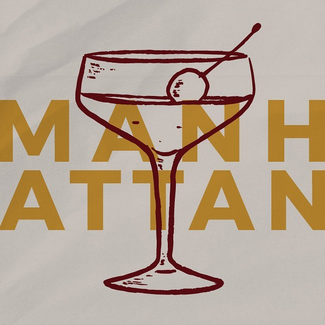
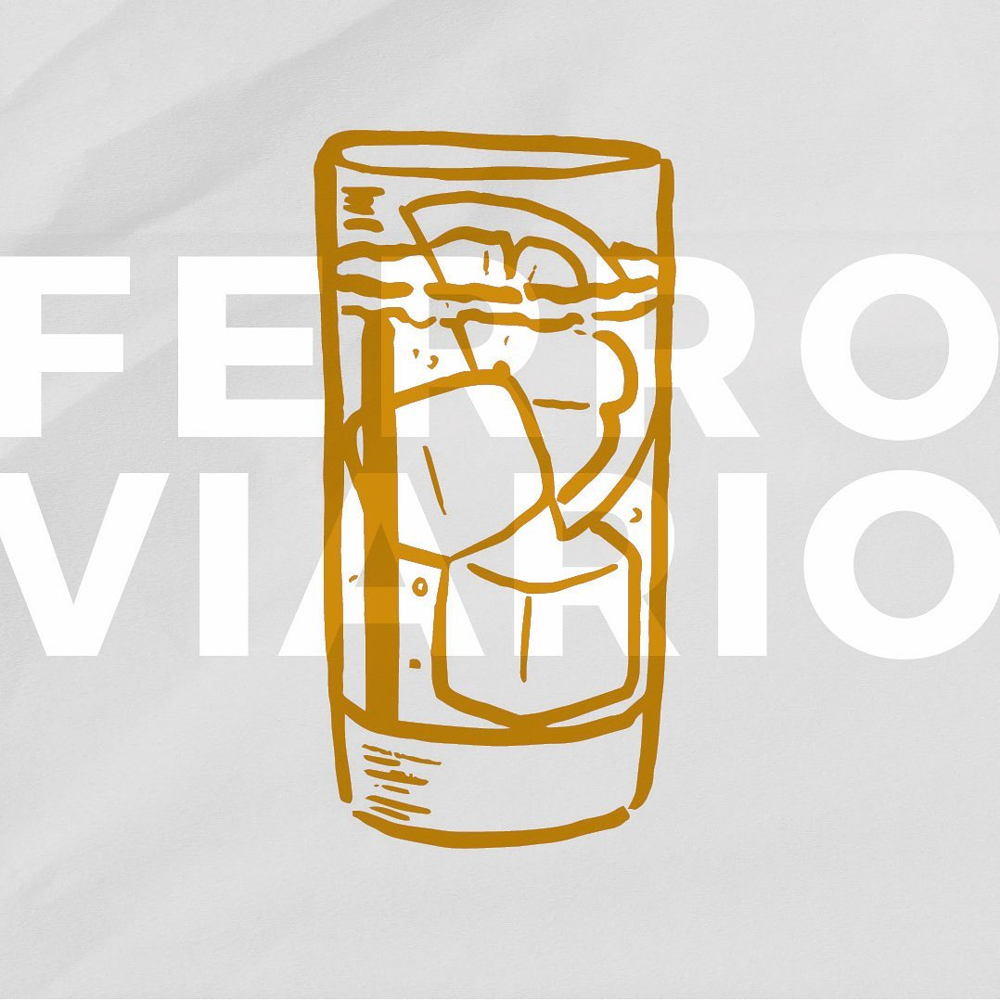
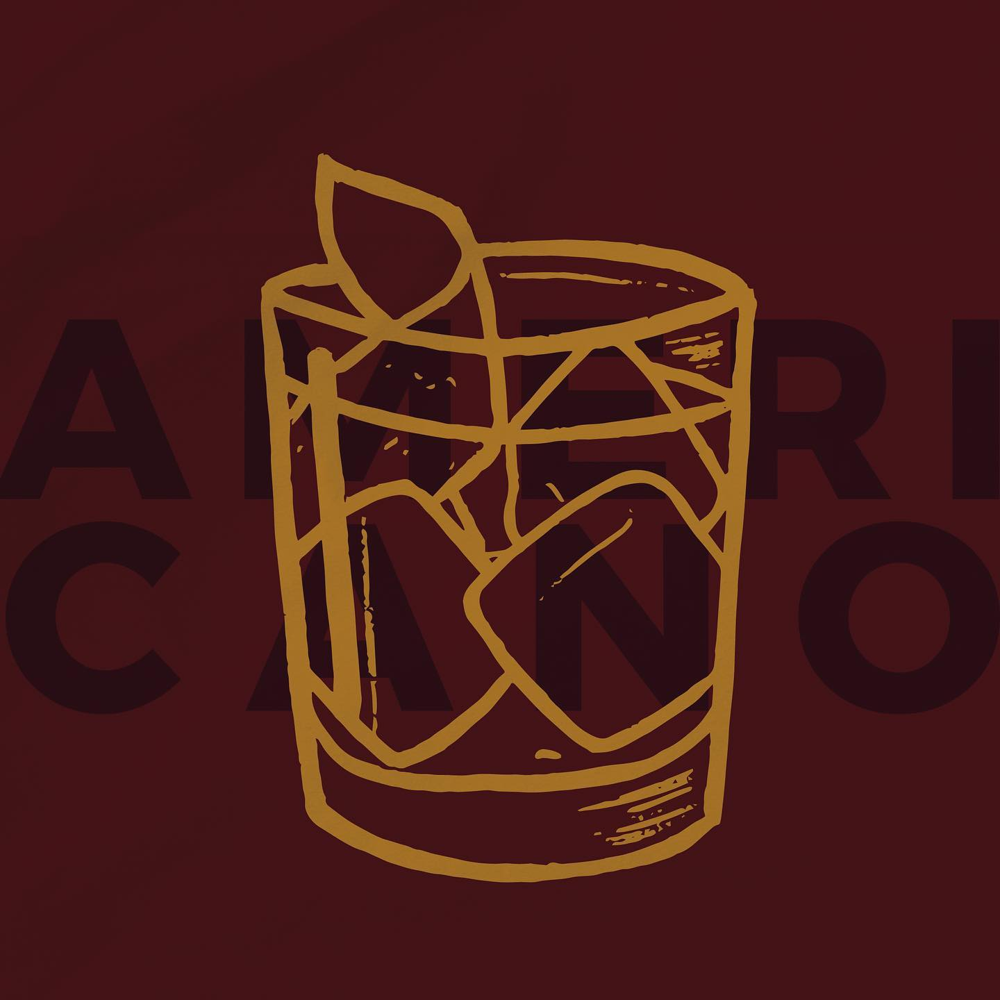

Cócteles
Te dejamos algunas ideas de cócteles que podes preparar con la charla para disfrutar con tus amigos

- Añadir en un vaso mezclador:
- -50ml de whisky
- -20ml de vermouth rojo la charla
- -Hielo
- -Un chorrito de bitter angostura
- Revolver con una cuchara hasta que todo esté unificado.
- Colar el contenido, separando el hielo sobre una copa de cóctel.
- Decorar con una cereza en almibar.
Manhattan
- Utilizar un vaso corto estilo oldfashioned y colocar abundante hielo.
- Luego agregar:
- -30ml de gin
- -30ml de campari
- -30ml de vermouth rojo la charla
- Mezclar y decorar con una rodaja o piel de naranja.
Negroni

- En un vaso largo colocar:
- -Una parte de fernet
- -Una parte de vermouth rojo la charla
- -Tres partes de soda
- -Hielo
- Decorar con media rodaja de limón.
Ferroviario
- Añadir en un vaso mezclador:
- -75ml de gin
- -15ml de vermouth blanco la charla
- -Hielo
- Con una cuchara revolver con suavidad la mezcla.
- Colar el contenido, separando el hielo sobre una copa de martini fría.
- Decorar con aceitunas y/o piel de limón.
Martini

- Utilizar un vaso corto estilo old fashioned y colocar abundante hielo
- Luego agregar:
- -30ml de campari
- -30ml de vermouth rojo la charla
- -Un chorrito de soda
- Mezclar y decorar con media rodaja de naranja y piel de limón.